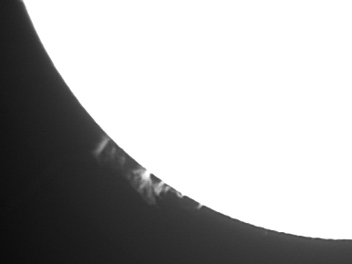
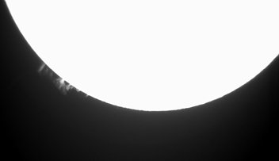
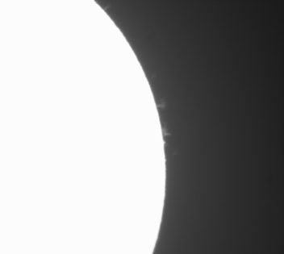
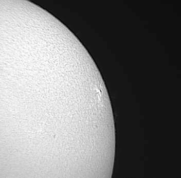
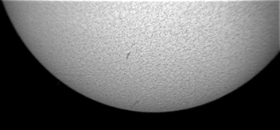
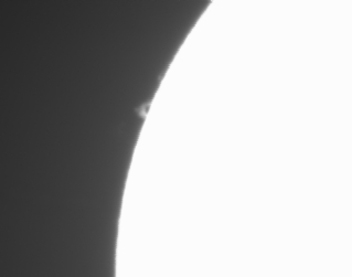

The Sun
These are various images of the Sun.
 |
 |
| Sun Spots
50 0.1 sec b&w images auto stacked using Meade Autostar Envisage and a 90mm Meade ETX telescope Meade DSI Imager |
The Sun In The Clouds
one second exposure, Canon Rebel XTi Meade 12" LX200, Solar Filter, Orion photographic Hydrogen Alpha filter |
 |
 |
| Active Region 953
Four Exposures @ 1/30 sec, Combined and processed in Photoshop, Canon Rebel XTi, ISO 100, Meade 12" LX200GPS | Mercury Transit and Sun Spot
1/40 sec, ISO 100 Canon Rebel XTi, Meade 12" LX200, Solar Filter Click "Here" for a hi-res image. |
 |
|
| Active Region 953 (wide)
One exposure, 1/25 sec., Canon Rebel XTi Processed in Photoshop, Meade 14" LX200GPS, Click "here" for a hi-res image. | Sun Sprite 4-27-07
Four Exposures @ 1/15 sec, Combined and processed in Photoshop, Canon Rebel XTi, ISO 800, Coronodo PST Click "here" for a hi-res image. |
 |
 |
| Full Sun in Ha w/Active Region 953
One exposure, 1/25 sec., Canon Rebel XTi, Processed in Photoshop, Coronodo PST, ISO 100 Click "here" for a hi-res image. | Active Region 953 in Ha
11 Exposures @ 1/25 sec, Combined and processed in Photoshop, Canon Rebel XTi, ISO 200, Coronodo PST Click "here" for a hi-res image. |
|  |  |
| Solar Prominence 7-18-07
10 monochrome images, 0.027 sec Processed and combined in MaxIm DL Meade DSI ProII, Coronodo PST |
Solar Prominence 7-18-07 (wide)
10 monochrome images, 0.027 sec Processed and combined in MaxIm DL Meade DSI ProII, Coronodo PST |
|  |  |
| Solar Flares 7-18-07
10 monochrome images, 0.027 sec Processed and combined in MaxIm DL Meade DSI ProII, Coronodo PST |
Active Region 963 w/flares 7-18-07
10 monochrome images, 0.010 sec Processed and combined in MaxIm DL Meade DSI ProII, Coronodo PST |
|  |  |
| Solar Filaments 7-18-07
10 monochrome images, 0.010 sec Processed and combined in MaxIm DL Meade DSI ProII, Coronodo PST |
Solar Prominence 7-18-07
10 monochrome images, 0.027 sec Processed and combined in MaxIm DL Meade DSI ProII, Coronodo PST |
 |
 |
| Solar Prominence 5/5/08
20 monochrome images, 0.010 sec Processed and combined in MaxIm DL Meade DSI ProII, Coronodo PST |
Solar Prominence 5/5/08
20 monochrome images, 0.027 sec Processed and combined in MaxIm DL Meade DSI ProII, Coronodo PST |

The sun as it sets behind clouds and mountains.
Meade 10" LX200 w/solar filter, Canon Rebel XTi, 1/25 sec, 38 exposures.
Gif animation made with Easy GIF Animator.